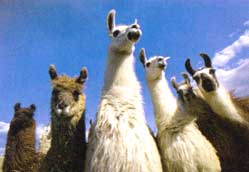

Flock of chicks: $20.
Llama: $150.
Helping end hunger while avoiding buying Grandma yet another set of coasters: priceless.
Of course, Grandma doesn't need a llama, but plenty of poor Bolivian families do. Enter Heifer Project International. For more than 50 years, this Little Rock, Arkansas-based philanthropy has helped more than 4 million families in 125 countries become self reliant through "living loans" of animals provided through donors' monetary contributions.
The Heifer Project's catalog offers gifts ranging in price from one share of a pig at $10 to the gift of a young cow at $500. The money is used to purchase top-quality animals, transport them to needy families around the world and provide training to those families on environmentally sound, sustainable animal husbandry. The recipients then take on ownership of the animals, with the caveat that they must pass at least one of the animal's offspring on to another local family in need. That family makes the same promise and before long, an entire village can be stocked with the descendants of a single gift animal.
Besides being the gift that keeps on giving, a Heifer Project animal is also the perfect last-minute idea for all those remainders on your gift-buying list. At the project's Web site, www.heifer.org, shoppers can make an order and notify the giftee by e-mail that an animal has been donated in their name. "Honor Cards" are also available for a more tangible way of announcing your gift.
Catalogs are available from the project's Web site, by calling (800) 698-2511, or by writing to Heifer Project, P.O. Box 98175, Washington, DC 20090-8175.
|
 |
|
|